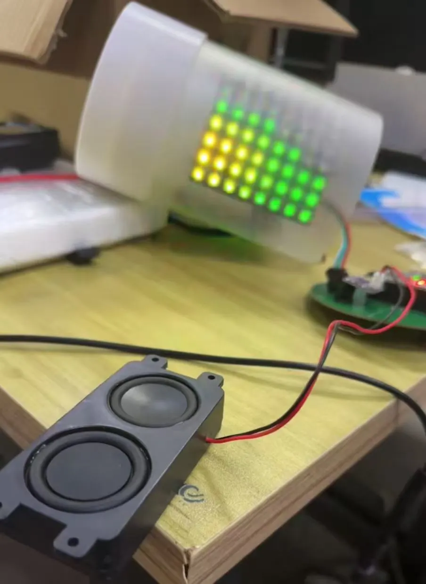
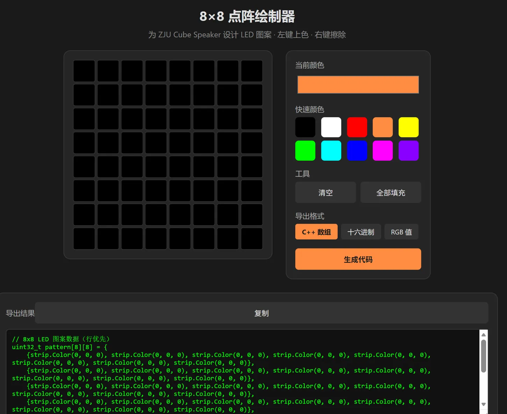

返回硬件项目索引
返回硬件项目索引律光——手势控制炫彩蓝牙音箱
阅读项目文档 ↓律光 SyncroLight：用灯光看见音乐
律光 SyncroLight 是一款面向校园演出、小型Livehouse及业余音乐创作者的低成本智能声光联动系统，致力于解决中小型演出灯光设备昂贵、操作复杂、声光同步效果不佳等问题，让专业级声光体验触手可及。
项目采用 ESP32 作为核心控制平台，通过256点快速傅里叶变换（FFT）实时解析音频频谱，结合自适应阈值算法识别音乐节奏，实现灯光随音乐动态变化。同时，系统集成手势交互功能，支持非接触式灯效切换，并提供自定义灯光场景设计，降低操作门槛。
项目创新性地提出“Sonic Journey”音乐叙事灯效模式，使灯光不仅能够响应节奏，还能呈现音乐的情绪变化与结构层次。产品采用轻量化设计，兼容DMX灯光设备，目标实现百元级成本与即插即用体验。
目前，项目已完成核心算法与原型机验证，正向产品集成和应用场景拓展推进，旨在为中小型演出提供普惠、智能、易用的灯光控制解决方案。




项目文档
项目介绍
项目介绍
律光 SyncroLight 项目文档
项目概况
marshmellow觉得很赞
项目名称
律光 SyncroLight
项目成员与指导信息
- 学院与年级：浙江大学光电科学与工程学院 2025 级
- 项目孵化：浙江大学启真交叉学科创新创业实验室（X-Lab）
- mentor：苗翔宇
项目简介
项目希望让灯光能够实时“听懂”音乐。系统通过 FFT 频谱分析、分频能量提取、EMA 自适应鼓点检测等方法，分析音乐中的低频、中频、高频、节拍和整体能量，再将结果映射为灯光颜色、亮度和动画变化。最终目标形态是一台百元级、即插即用的智能 DMX 灯光控制器，并通过手机 App 和手势进行模式控制。
当前已完成核心算法验证原型：以 ESP32 为主控，通过蓝牙接收并播放音频，驱动 LED 点阵或灯带随音乐实时变化，并接入 APDS9960 传感器实现手势或接近交互。现阶段尚未打通 DMX512 输出、线路音频输入和手机网页，项目仍处于从“算法可行”走向“产品可用”的阶段。
---
项目成长
项目经历了“发现演出问题、提出智能灯控设想、缩小范围验证核心算法、制作实体原型”的过程。材料中的时间线显示：2025 年 10 月在演出中发现灯光沟通问题；2026 年 6 月进一步明确需求；2026 年 7 月集中完成 FFT 算法与原型开发；2026 年 8 月完成。
嵌入式代码
当前原型的软件流程可概括为：
Plain Text
蓝牙音频回调
↓
IIR 能量提取与 FFT 采样缓存
↓
主循环执行 FFT、鼓点/BPM/能量分析
↓
灯光渲染引擎生成图案和颜色
↓
WS2812B LED 输出
主要代码模块与功能如下：
- 蓝牙音频模块：使用 ESP32-A2DP 接收手机音频，并通过 I2S 输出至 DAC、功放和扬声器。
- 频谱分析模块：使用 arduinoFFT 对音频进行频域分析，提取低、中、高频能量。
- 鼓点与节奏检测模块：通过 IIR、EMA 长期能量基线、自适应阈值和节拍间隔限制，提高不同曲风下的触发稳定性。
- 灯光渲染模块：使用 Adafruit_NeoPixel 驱动 WS2812B，支持 Equalizer、Ripple、Glitch、Rainbow、Work、Sonic Journey 等模式。项目大纲记录当前版本共设计 11 种灯光模式。
- 交互模块：使用 SparkFun_APDS9960 读取手势或接近信息，并针对兼容芯片做寄存器级初始化与功能降级。
- 实时性设计：音频回调只完成必要计算，FFT 放在主循环执行；使用双缓冲降低采集与计算之间的阻塞；将渲染与交互逻辑拆分。
电路原理图
文件夹中没有独立的电路原理图文件。根据 PPT 和原型照片，可以还原出当前验证原型的主要连接关系：
Plain Text
手机蓝牙音频 → ESP32 → I2S DAC / 功放 → 扬声器
├→ GPIO → WS2812B LED 点阵 / 灯带
└→ I2C → APDS9960 手势与接近传感器
硬件选型考虑如下：
- ESP32：集成蓝牙和 I2S，算力足以承担实时 FFT 和灯光控制。
- WS2812B：使用单线控制，可逐像素设置颜色，适合快速制作点阵和灯效原型。
- APDS9960：成本约 10 元，可检测接近、环境光、RGB 和手势。
- 扬声器与功放链路：用于验证“同一设备播放音频并实时生成灯光”的完整闭环。
后续产品化计划是在 ESP32 上增加 UART 转 RS485 电路，以输出 DMX512 信号；同时增加 3.5 mm LINE IN、I2S ADC 采样链路，使控制器可直接接入 DJ 台或调音台。
机械结构
当前原型采用白色半透明外壳，将扬声器、控制板、传感器和 LED 显示部分组合成桌面音箱形态。LED 的扩散光可透过外壳显示，便于观察频谱和动画效果。内部以连接线和小型模块完成快速装配，结构重点是验证音频、灯光和交互的协同工作，而非最终产品的小型化与量产设计。
从现有照片可以看到，原型仍存在接线较多、模块固定方式简易、内部空间利用率有限等特点。PPT 也明确说明当前版本尚未完成最终外壳。下一阶段需要重新规划 PCB、供电、接口位置、散热、LED 扩散层和外壳装配方式。
调试与迭代过程
1. 从舞台系统收缩为可验证原型
最初设想是直接制作实时音频驱动的 DMX 舞台灯光控制器，但 DMX 硬件链路、灯具库、音频输入和 App 的工作量较大。项目因此先将核心的“音频解析 + 灯光映射”放到蓝牙音箱原型中验证，降低了第一次实现的复杂度。
2. 从固定阈值改为自适应鼓点检测
早期版本只用固定低频阈值识别鼓点，在电子乐中有效，但换成鼓点较弱的流行音乐会漏检，摇滚或持续贝斯又容易误触发。后续引入 EMA 长期能量基线，以 短期低频能量 > 长期能量 × 1.25 作为动态判断条件，并结合多频段 onset、频谱通量和节拍间隔限制提高稳定性。
3. 从“随节奏闪”发展到歌曲段落表达
简单随机频闪只能表现瞬时节奏，无法体现歌曲的结构。项目进一步设计 Sonic Journey 模式，根据能量、BPM 和频谱亮度判断 INTRO、VERSE、BUILDUP、DROP、BREAKDOWN、OUTRO 等阶段，再为不同阶段切换旋转、粒子、加速、频闪和淡出等视觉风格。
4. 手势传感器兼容性处理
项目计划通过上、下、左、右手势控制音量、歌曲或灯效。但部分 APDS9960 兼容芯片返回 0x9F，官方库无法正常初始化。调试后改用寄存器级初始化，并在完整手势不可用时降级为接近轻拍和悬停操作，使系统仍可稳定交互。
5. 电源、延迟与代码结构优化
- LED 在鼓点时同时高亮会导致电压跌落并影响扬声器，后续加入全局亮度上限和动态亮度曲线。
- LED 刷新曾出现比音乐慢半拍的问题，优化渲染循环后目标刷新率约为 30 fps。
- BPM 会受噪声影响跳动，后续加入中值滤波与节拍间隔限制。
- 灯光模式增加后代码难以维护，后续将各渲染模式拆分为独立函数，并统一调用接口。
---
AI 使用说明
现有材料能够确认的 AI 使用主要集中在展示内容制作：
- 项目通过 AI 生成的视觉素材帮助解释 INTRO、VERSE、BUILDUP、DROP、BREAKDOWN、OUTRO 等抽象音乐段落与灯效之间的关系。
- 还有代码。基本由ai完成
---
交流与心得
交流记录
项目需求来自真实演出经历。这是电音社学长与灯光人员沟通的截图，“我跟灯光师傅商量了一万遍”“上下上下左右左右”等内容直观反映了传统口头沟通方式繁琐、难以精确同步音乐的问题。这些交流促使项目将“降低操作门槛”和“实时自动响应”确定为核心方向。
项目心得
本项目最大的收获不是完成某一个灯效，而是建立了完整的工程实践过程：从真实场景中发现问题，主动缩小项目范围，搭建最小可验证原型，再通过播放测试逐项解决算法、供电、延迟、兼容性和结构问题。
项目也验证了一个重要判断：范围收缩并不等于放弃目标。先用蓝牙音箱和 LED 原型证明实时声光联动的核心算法可行，为后续接入 DMX512、线路音频和手机 App 提供了更可靠的基础。
团队项目说明
律光 SyncroLight
交互方式说明文档 · 项目方案版
一、交互系统概述
律光面向校园演出、小型 Livehouse 与个人音乐创作者，采用“音乐自动驱动 + 手势快捷控制 + 手机 App 配置”的三层交互架构。音乐决定灯光的实时变化，手势用于演出现场的快速干预，App 负责模式选择、参数调整与场景管理。
二、音乐交互：光随律动
系统对输入音频进行 256 点快速傅里叶变换（FFT），分析低、中、高频能量，并结合自适应阈值识别鼓点和节奏变化，形成灯光控制指令。
低频：侧重鼓点与 Bass，关联亮度脉冲、闪烁等效果。
中高频：依据旋律与高频变化，关联色彩、动态速度等参数。
Sonic Journey：规划以音乐段落、能量走势和情绪变化组织灯效的叙事模式，避免仅随节拍随机频闪。
三、手势交互：挥手控光
拟采用 APDS9960 手势传感器识别上下左右挥动，帮助表演者在不操作控制台的情况下切换或调整灯效。以下为建议映射，可在开发阶段调整。
手势
建议功能
向左挥动
上一灯效
向右挥动
下一灯效
向上挥动
提高亮度
向下挥动
降低亮度
四、手机 App 交互：个性化配置
模式管理：切换音乐律动、手动控制及 Sonic Journey 等模式。
参数设置：调整颜色、亮度、节奏灵敏度及灯效速度。
场景编辑：创建、保存和调用自定义灯光场景。
演出快捷操作：在现场快速调用预设，减少复杂的预编排流程。
五、协同逻辑与使用流程
连接音频输入与灯光设备 → 选择自动律动或预设场景 → 系统实时生成灯效 → 表演者通过手势临时切换 → 用户通过 App 进一步配置并保存方案。
交互设计原则：自动运行优先、现场干预便捷、复杂配置后置。目标是在保留创作自由度的同时，让初次使用者也能快速完成声光联动。
六、实现状态与边界
根据现有项目介绍，FFT 音频解析、节奏识别等核心算法已在原型机上验证；手势交互和自定义灯效属于已提出的技术方案。App 的具体界面、手势动作映射、Sonic Journey 的完整实现以及 DMX 设备兼容范围，仍需依据实际开发与测试结果确认。本文不将规划功能表述为已完成产品能力。